2degrees Lyttelton Tunnel
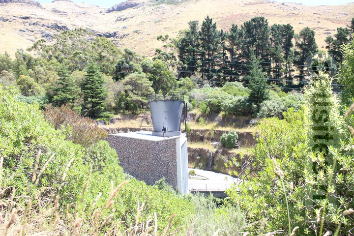
Spark Sumner North
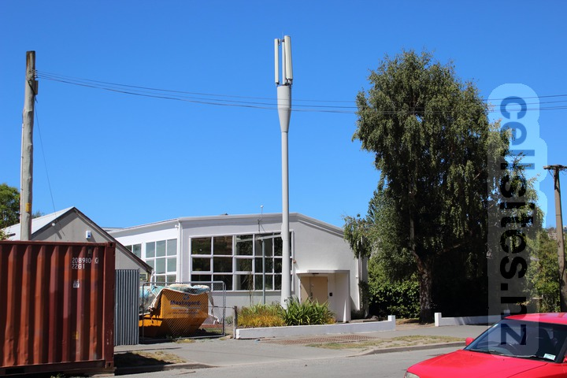
Former Telecom Sumner
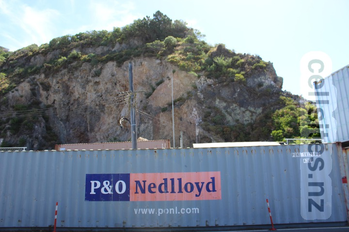
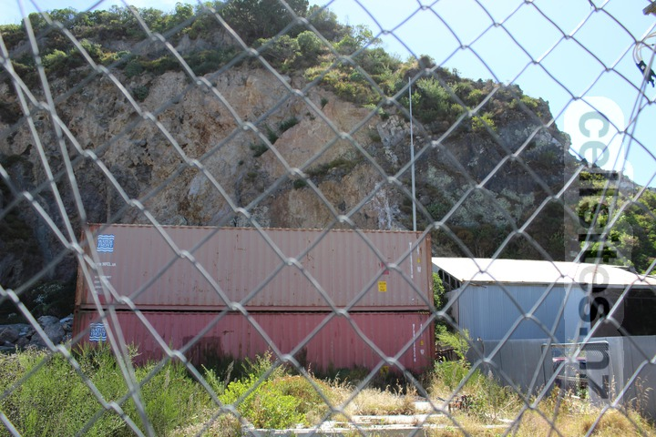
Vodafone Sumner
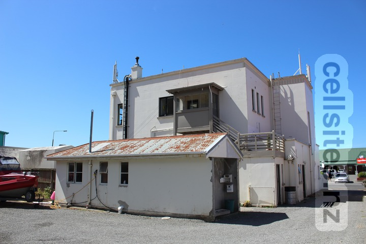
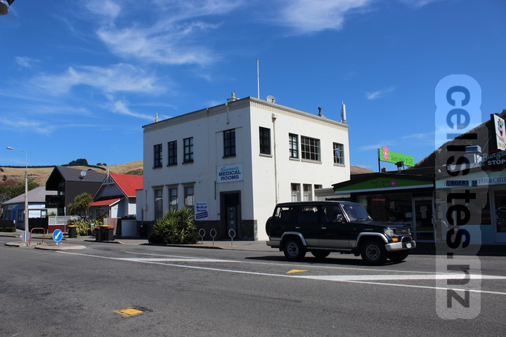
Spark Waltham
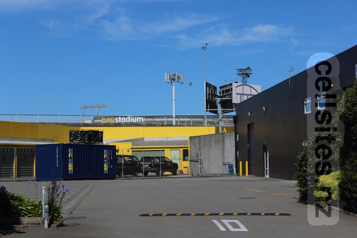
Vodafone Opawa
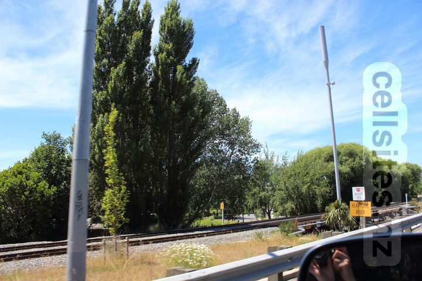
Spark Taylors Mistake
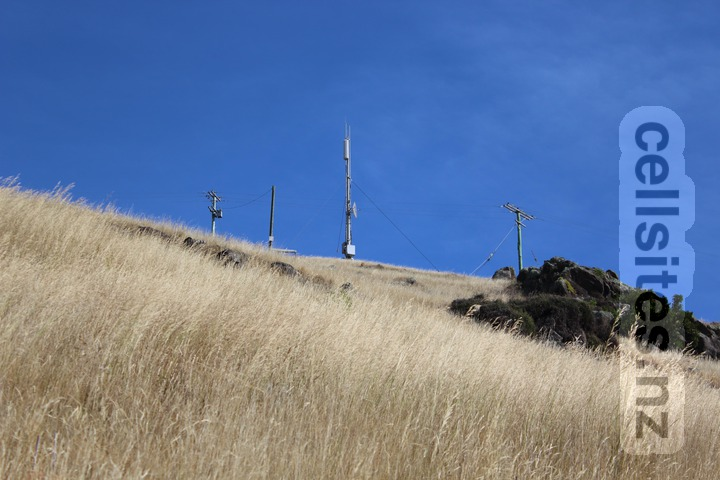
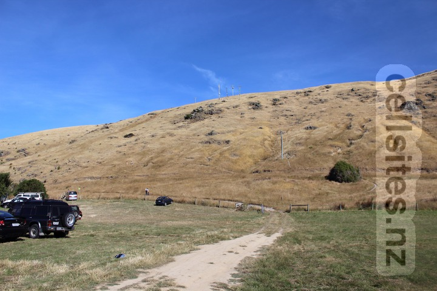
Vodafone Redcliffs
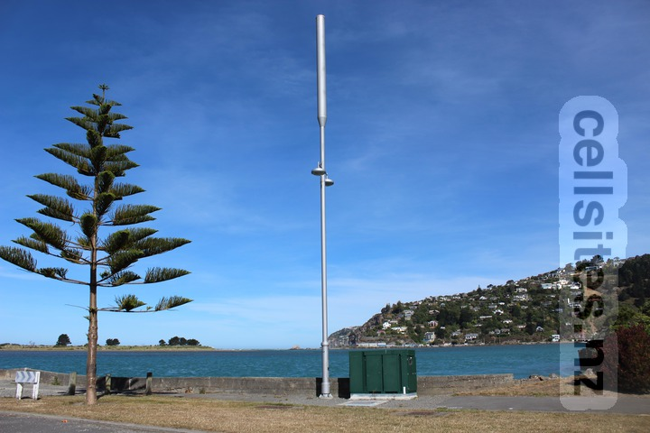
Spark Moncks Bay
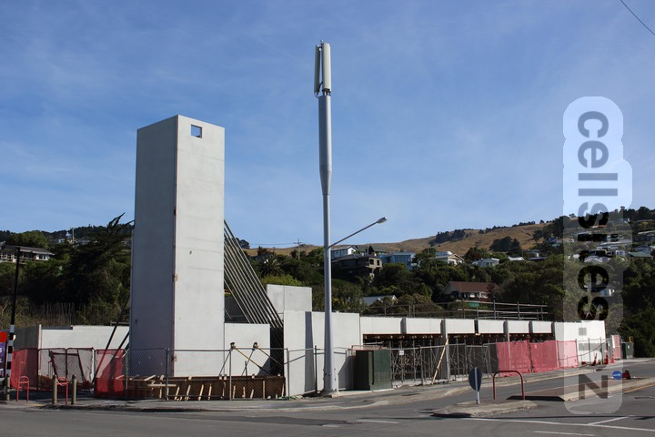
2degrees Charleston
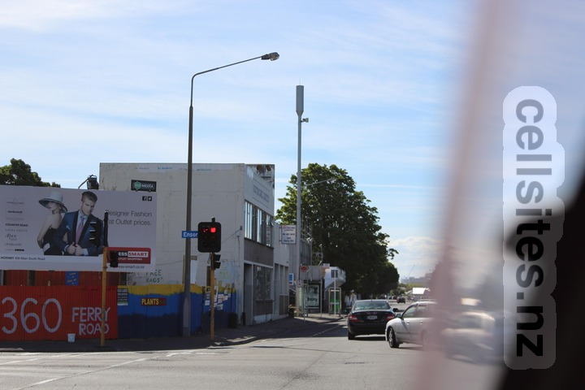
2degrees/Spark/Vodafone Telecom House
-
2degrees
- Name: Chrischurch Exchange
- ID: CHC-060-150
- Code: CEXC
- GIS Geek
-
Spark
-
Vodafone